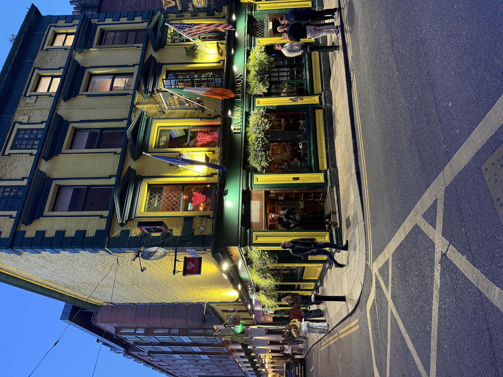

Prior to the establishment of modern pubs, Irish social life revolved around communal gatherings in homes and local inns. Before I came here, I thought I knew what a pub was, but I quickly realized that Irish pubs are more than just places to drink; they are vibrant social hubs where people come together to share stories, music, and laughter. The pub culture in Ireland is deeply rooted in the country's history and traditions, serving as a cornerstone of community life. Whether it's a lively night filled with traditional music or a quiet afternoon spent chatting with friends, the pub is an integral part of Irish culture that fosters connection and camaraderie among its patrons.
It doesn't matter who you are, where you're from, or what you do; the pub is a place where everyone is welcome. At all hours of the night, friends and strangers alike gather in the warm and lively atmosphere of the pub to share stories, laughter, and a pint. The sense of community and camaraderie that permeates Irish pubs is truly remarkable, creating a space where people from all walks of life can come together and connect over a shared love of good company and great conversation.

The Irish have a deep appreciation for good food, and this is reflected in their culinary traditions. From hearty stews to fresh seafood, Irish cuisine is diverse and flavorful, showcasing the country's rich agricultural heritage and coastal bounty. The food here is representative of the culture and history of the country, with dishes that have been passed down through generations and adapted to modern tastes. Whether it's a traditional Irish breakfast, a comforting bowl of Irish stew, or a plate of freshly caught fish and chips, the Irish take great pride in their food and the role it plays in their cultural identity.
The food is also a direct correlation of the melting pot that is Ireland. The country has a long history of hosting immigrants from all over the world, and this is reflected in the diverse range of cuisines available in Dublin. From Italian to Indian, Chinese to Mexican, the food scene in Dublin is a vibrant tapestry of flavors and influences, showcasing the city's multiculturalism and openness to new ideas. The Irish have embraced this diversity and have made it their own, creating a unique culinary landscape that is both traditional and innovative, reflecting the dynamic and evolving nature of Irish culture.